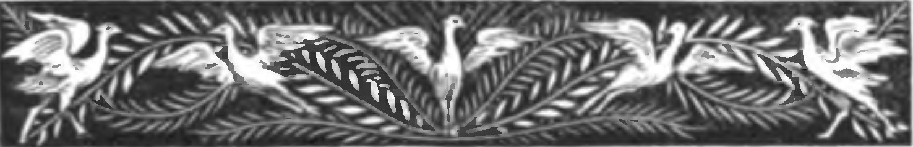
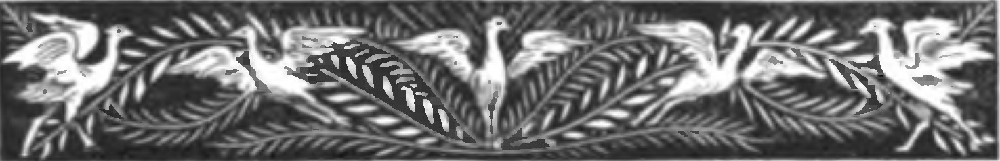

Revolució Industrial
Riquesa tèxtil i burgesia amb diners per gastar en art.

L'Eixample
El Pla Cerdà (1859) oferia espai il·limitat.

Renaixença
Recuperació de la identitat nacional.


Exposició 1888
Barcelona al món.